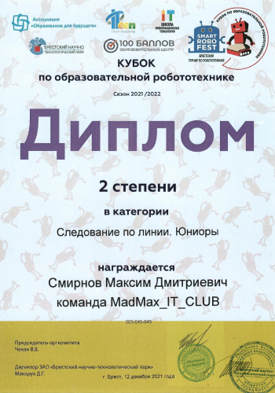
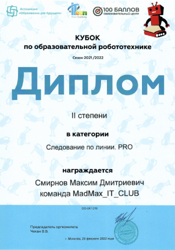
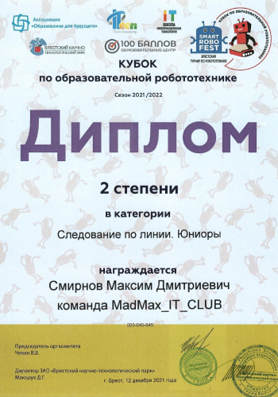
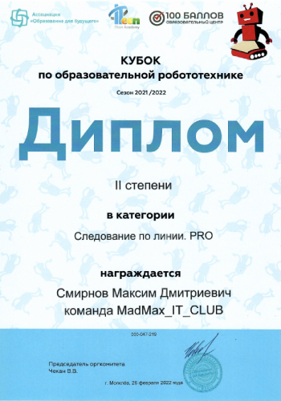
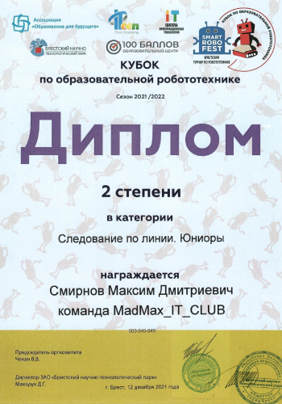
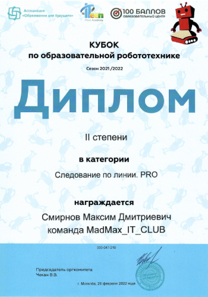

Максим Смирнов - член команды It_Club по робототехнике, ученик клуба "Двойной Чикаго", который не раз ездил на соревнования с командой. Парень занимал призовые места 5 раз из 6 на соревнованиях в категории “Следование по линии PRO”. На последних соревнованиях команда отлично себя показала, Максим занял победное 1 место! Парень собрал робота под названием “Mad Max”. Название робота является отсылкой как к имени создателя робота, так и к культовому фильму “Безумный Макс”.


© copyright 2022 created by thetimasuschenia